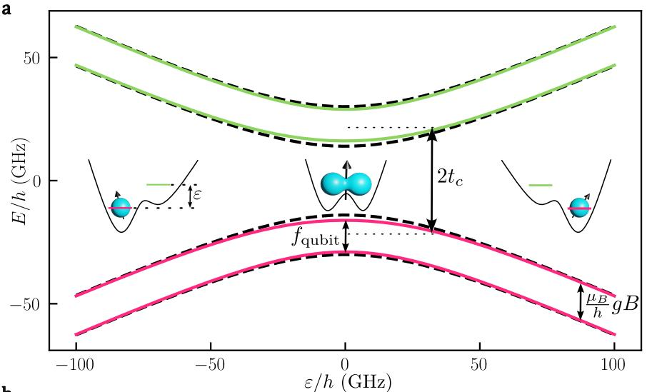
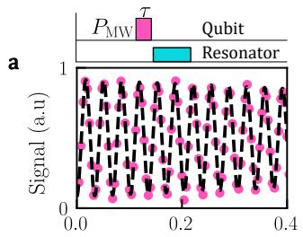
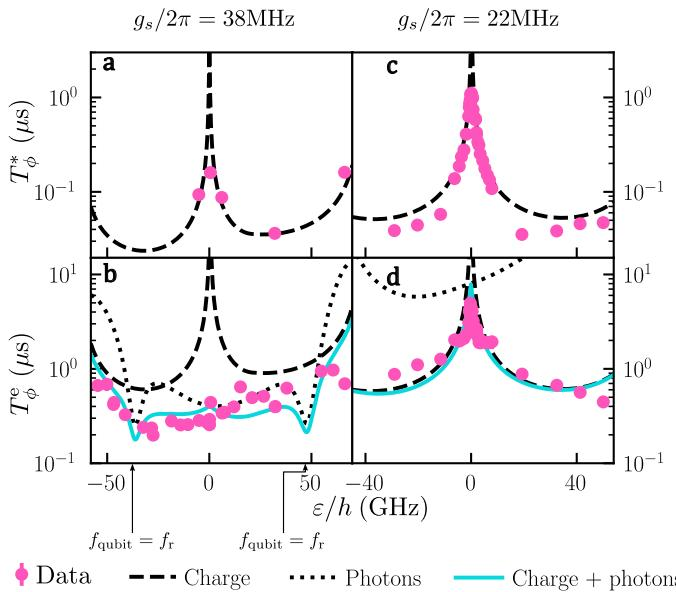
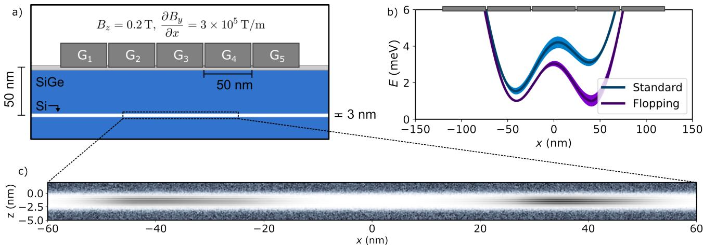
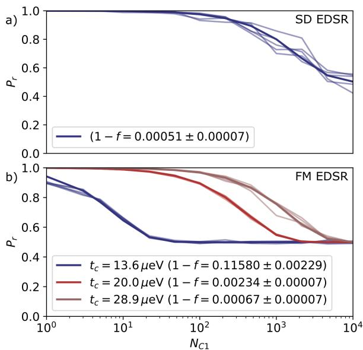
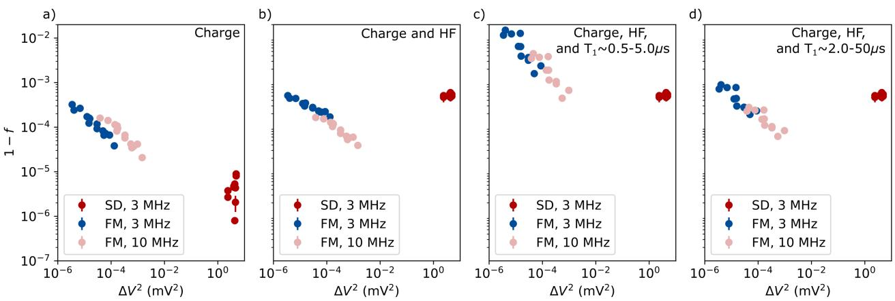

物理图像与定义
翻转模式（flopping mode）是把单自旋自旋量子比特编码在一个双量子点中并把工作点调到**电荷失谐零点（symmetric point，）**的一种模式：电子不再被束缚在某个量子点的势阱里，而是处于左右两点的相干叠加态 之间，对交流电场（电极驱动或腔真空涨落）的响应因此变大——电偶极矩由”被束缚的小偶极”变为”覆盖点间距的大偶极”。在硅量子点中，硅材料本征自旋轨道耦合（电偶极自旋共振，EDSR）弱，传统方案只能依靠微磁体（钴薄膜等）产生梯度磁场，再经 EDSR 完成电控自旋旋转；而翻转模式则让梯度磁场在电子大尺度移动时被更充分地”采样”，从而使有效自旋–轨道耦合（synthetic spin–orbit coupling）整体放大。
物理上的关键有三点：
- 电偶极矩放大： 处左右本征态是 ，电荷分布跨整个双点，交流电场在 方向的微扰直接把电子在 、 之间翻转；
- 梯度磁场被电子运动采样：微磁体产生的纵向磁场差 和横向磁场差 在电子跨越双点时被依次感受，于是梯度磁场充当自旋–轨道耦合源；
- 隧穿耦合与塞曼能的角色变化：当 时，零失谐处比特频率主要由 决定；而 时，零失谐处会出现一个对外磁场线性不敏感的”鼓包”，对应翻转模式自旋比特的电荷噪声甜点。
英文名 flopping mode 形象地描述了电子在两点之间”扑腾”的状态。
理论模型：四能级哈密顿量与翻转模式比特
翻转模式自旋比特的工作点在 处由四能级哈密顿量描述。基矢取 ，把隧穿耦合 、平均塞曼能 、两点的纵向塞曼差 、横向塞曼差 一并写进来：
其中 是两点的塞曼能。把轨道部分先对角化得到能级 与混合角 （注意两套文献里 与 的取向恰好相反），便可分离出自旋部分。
零失谐特例：
零失谐处 ，轨道本征态 。把 用 重新展开（参见，式 5.1–5.4），得到
其中自旋–轨道混合角 。最低两个本征态 、 即翻转模式比特 、。当 时混合角 很小， 中 成分压低，但仍带有一部分左/右混合的轨道态，因此自带电偶极。
比特频率
把 当作微扰，用二阶非简并微扰给出最低两个能级之间的能量差：
前一项是梯度磁场对 的横向修正，第二项把”电子在左右两点的概率差”乘以两点塞曼差，体现为失谐对频率的线性贡献。当 时横向修正项是二阶小量，比特频率的”S 形”主要来自 项；当 足够大时， 附近会出现一个极值点——比特频率关于 的导数为零，对应电荷噪声的”甜点”。
Rabi 频率
在Rabi 振荡中，零失谐处微波驱动的电子在 、 间翻转的速率为 。再叠加 引入的自旋–轨道杂化后，比特 Rabi 频率为
对一般失谐下
两个分母分别表达两点隧穿耦合与塞曼能的相对大小，以及电子轨道波函数随失谐向单点收缩导致的衰减。零失谐处 Rabi 频率的最大提升就来自这两个因子同时变大的乘积。
工作点与”甜点”
对称点带来一个看似矛盾的结果：电偶极矩最大意味着对电场噪声最敏感，但同时失谐的一阶导数 又可以在特定条件下消失。出现这种”翻转模式甜点”的条件是：
- 足够大使式 5.10 第二项贡献显著（ 条件不再成立）；
- 极值点位置正好落在 附近。
满足这两个条件时，比特频率在零失谐附近取极值，电荷噪声的一阶贡献为零，比特相当于一个”自带甜点”的电荷比特。在品质因子 上表现为极大值。
实验上这种甜点的观测条件较为苛刻：硅中本征自旋轨道耦合弱， 主要靠微磁体的 ，只有 不太大时横向修正项才会和 项可比拟。Si/SiGe 中的早期实现选择 区段，让鼓包明显。
参数与量级
| 量 | 典型值 | 来源 |
|---|---|---|
| 工作点 | 双量子点 ，混合态电子分布 | 翻转模式定义 |
| 隧穿耦合 | （Si-MOS，强隧穿耦合双量子点） | |
| 隧穿耦合 | （同片另一双点，可重复性验证） | |
| 隧穿耦合 | （Si/SiGe RDQD），（LDQD） | |
| 微磁体横向磁场差 | （Si-MOS 模拟值） | |
| 电荷翻转频率 | （拟合式 5.9 反推） | |
| 比特谐振频率 | （Si-MOS，–） | |
| 比特谐振频率 | –（Si/SiGe 三量子点） | |
| Rabi 频率 | （，Si-MOS） | |
| Rabi 频率 | （RDQD），（LDQD） | |
| 退相干时间 | （Si-MOS） | |
| 退相干时间 | （RDQD），（LDQD） | |
| 自旋退相干 | （RDQD），（LDQD） | |
| 品质因子 | ，相比大失谐提升一个量级 | |
| 自旋–光子耦合 | （RDQD），（LDQD） | |
| 谐振腔线宽 | （RDQD），（LDQD） | |
| 全局电荷–光子耦合 | （Si/SiGe） | |
| 高阻抗腔阻抗 | （，） | |
| 电子温度 | –（无微波 vs. 微波驱动） | |
| 臂杆系数 | （磁输运谱线标定） | |
| 臂杆系数 | （第二个量子点） | |
| 空穴 FM（Si 纳米线 + NbN 腔） | ；Rabi 至 130 MHz 无饱和； | Noirot 2026 |
| 空穴 FM 单门品质因子 | 最大 380（预期保真度 ~99.9%） | Noirot 2026 |
| 空穴 FM 退相干 | Ramsey 甜点 160 ns（1/f 电荷噪声 eV/√Hz）；回波无甜点（260 ns→1 μs）——热光子散粒噪声主导； 多模 Purcell+Johnson | Noirot 2026 |
| 模拟 FM 保真度持平 SD 所需 | s（3 MHz Rabi）、s（10 MHz Rabi） | Young 2025 |
| 模拟 FM vs SD 驱动功率 | 同失真度下 <1/1000；10 MHz Rabi 下失真度再低一个量级、功率仍低两个量级 | Young 2025 |
| 模拟噪声参数 | 超精细 ；栅极参考电荷噪声 （1/f，OU 系综）；，梯度 | Young 2025 |
| 模拟器件系综 | 5 个合金无序实现，双点 –eV，谷劈裂 33–335 μeV；谷劈裂上限可禁止 FM（Device #5） | Young 2025 |
实验特征与测量方法
隧穿耦合与失谐的标定
在 Si/SiGe 中强隧穿耦合（）使双点的势垒形状接近单量子点，– 的反交叉隧穿线在电荷稳定图上几乎消失，需要通过翻转模式比特频率谱反推零失谐位置。具体做法：保持微波脉冲的快速绝热通道（chirped pulse）扫过失谐点，记录不同 下比特谐振频率 ，曲线呈现”反交叉”形，零失谐位置对应曲线对称轴中心。再用式 5.10 拟合得到 、、 等参数。
Rabi 振荡
固定微波持续时间 ，扫描微波频率 可得到 Rabi 振荡的”V 形条纹”图（V-shape chevron）： 时振幅最大，偏离时振荡频率增加、振幅降低。先扫频率后扫时间的好处是：长时间测量中比特频率若发生缓慢漂移，可以后期对 V 形图做中心对齐校正；先扫时间则无法补救。在 Si-MOS 单发读出条件下， 在 处测得 ，零失谐处 ；相比 处提升约一个量级， 几乎不变。
自旋退相干与质量因子
定义 。零失谐处 增加一个量级而 不变， 同步提升一个量级。这说明翻转模式带来的额外电荷混合没有显著引入新的电荷噪声通道——样品中主导退相干的是微磁体导致的纵向磁场梯度。Ramsey 实验给出 与 处的 ，两者基本一致，进一步支持上述结论。
谐振腔中的翻转模式
将翻转模式比特嵌入高阻抗谐振腔的杂化器件，有效自旋–光子耦合强度可以表示为
即相对电荷–光子耦合 引入一个 的比例因子。当 与 接近时 增大、 同步上升；为了兼顾强自旋–光子耦合与较小退相干，常把工作点选在 略小于 的位置。判据仍然是 ，对应强耦合区。
阵列意义：从双点到三量子点
把翻转模式比特放在量子点阵列中能解决两个传统自旋比特在大规模扩展中遇到的难题：
- 电偶极矩大 → 易与腔耦合：单个比特无需直接连接到腔电极也能形成强自旋–光子耦合。 在 Si/SiGe 三量子点中分别把翻转模式比特编码在 RDQD（QD2–QD3，电极 P2/P3 直接连腔）与 LDQD（QD1–QD2，所有电极均不连腔）中，测得 分别为 21.8 MHz 和 13.8 MHz。LDQD 的成功演示表明谐振腔的耦合半径远大于自身栅极覆盖范围，可以把分布在多个量子点上的比特同时与同一腔模耦合。
- 翻转模式的 Rabi 频率高 → 操控快： 在 RDQD 与 LDQD 中分别实现 与 的 Rabi 频率， 分别为 152 ns 与 304 ns。在多比特共享腔模时这些参数直接决定门操作的串扰水平和读取速度。
阵列中的具体编码方式有两种：
- 直接连接：比特占据 RDQD，其中一个量子点（QD3）的电极直接连到腔电极；这是早期 Si/SiGe 自旋–光子强耦合实验的常见做法。
- 间接耦合：比特占据 LDQD，三个电极（P1/B1/P2）都不与腔电极相连；通过介电环境与共享栅极电容实现与腔的耦合。这一做法把强耦合从”电极邻接”解放出来，使得同一条腔总线上的比特不必密集排列在腔电极附近，为更大规模的二维量子点阵列留出空间。
此外，三量子点阵列还允许”备品比特”——LDQD 中未被利用的量子点可作为电荷态探针或辅助比特使用。
优势、代价与权衡
优势：
- 大电偶极矩 + 梯度磁场 → EDSR 效率提升一至三个数量级，Rabi 频率可达十 MHz 以上；
- 比特频率可由 调谐，相邻比特之间可以通过电压失谐来寻址；
- 与高阻抗腔配合即可获得强自旋–光子耦合，为腔介导长程耦合打开通道。
代价：
- 电荷混合增加 → 比特频率对电场噪声更敏感；只有当 大到能形成”翻转模式甜点”时才有一阶电荷噪声保护；
- 隧穿耦合 与谐振腔频率 必须接近（）才能拿到大的 ，这增加了样品设计的耦合带宽要求；
- 比特的电学可调性较差：比特频率仍依赖 ，不能通过电极电压快速、独立地调节每个比特；
- 单发读出需要快速穿过反交叉区，否则 Landau–Zener 隧穿会把激发态泄露到基态。
空穴实现与”互易甜点”的实证（Noirot 2026）
上文甜点理论预言”一阶电荷噪声保护与最大电偶极天然共存”（互易甜点，reciprocal sweetness），但长期缺乏实验实证——硅中电子的内禀自旋轨道弱，甜点观测条件苛刻。Noirot 等人用硅纳米线空穴 FM 比特（纳米线几何带来特强自旋轨道）补上了这块：双点隧穿耦合做到 ，空穴波函数完全离域（），接高阻抗 NbN 谐振腔做色散读出（无需电荷传感器）。自旋–电荷杂化使 因子被磁场重整化（），比特频率随 可调超过一个量级，并在 处取极小——天然的一阶失谐甜点，同时电偶极与自旋–光子耦合 最大（共振处真空 Rabi 劈裂直接验证 ； 时空穴局域化、 迅速淬灭）。

空穴 FM 比特的能级与谱学：强自旋轨道下轨道成键态的自旋劈裂在 ε=0 附近被自旋–电荷杂化压低（实线 vs 无自旋轨道的 Zeeman 虚线），FM 比特编码在成键态的两条自旋劈裂能级间；比特频率随 B 大范围可调、共振处见真空 Rabi 劈裂（提取 g_s），两 tone 谱显示 ε=0 的一阶失谐甜点。图源：Noirot et al. (2026), Fig. 1。
单比特性能（、、甜点工作）：Rabi 频率随驱动幅度线性增长至 130 MHz 无饱和； 在 附近达最大 。单门品质因子
（可连续执行的门数）最大 380——对应约 99.9% 的预期保真度，比 FM 比特此前最好值高出一个量级以上。

单比特性能：(a) 甜点处的 Rabi 振荡（衰减正弦拟合）；(b) Rabi 频率随驱动功率线性增长至 130 MHz 无饱和（斜率 0.5 指引线）；(c) T₂^Rabi 随 Rabi 频率先升后降（峰值 2.1 μs @20 MHz）；(d) 单门品质因子 Q_gate=2·f_Rabi·T₂^Rabi 最大 380。图源：Noirot et al. (2026), Fig. 2。
相干性的光子主导分解——利用 FM 比特的大频率可调性逐项排查：
- 弛豫：，与读出腔基模 Purcell（黑虚线）、多模 Purcell（青线）与 Johnson–Nyquist（橙线）模型的组合吻合——辐射弛豫是主通道；
- 退相干：Ramsey 在甜点处达 160 ns 峰值、中间失谐处降至 30 ns——与 1/f 失谐电荷噪声（）一致；但回波 没有甜点行为（ 处反而最小 260 ns、远离处升至 1 μs），且 远小于低频噪声主导的预期——高频噪声源在起作用：腔内热光子数涨落（散粒噪声）经 ac Stark 频移主导退相干。

退相干机制甄别：Ramsey（a）与 Hahn 回波（b）退相干时间随 ε 的变化——Ramsey 呈甜点行为（电荷噪声主导），回波却无甜点结构（ε=0 处最小 260 ns），指向腔热光子散粒噪声经 ac Stark 频移的高频退相干通道。图源：Noirot et al. (2026), Fig. 4。
结论反转了”FM 比特受电荷噪声限制”的默认图像：甜点生效后，微波环境的优化（腔模管理、热光子抑制、Purcell 滤波）成为提升 FM 比特相干的主战场——FM 比特由此确立为”快（百 MHz Rabi）+ 可靠（Q_gate≈380）+ 强腔耦合”的单比特候选。空穴体系的更多背景见空穴自旋量子比特。
保真度基准模拟：SD 与 FM EDSR 的系统对比（Young 2025）
低驱动功率是翻转模式的卖点，但其门保真度相对传统单点 EDSR（SD EDSR）究竟如何，长期缺乏系统评估。Young 等人对 Si/SiGe 器件系综做了含真实噪声通道的随机化基准测试全模拟，给出了第一份定量答卷。器件模型取 3 nm 厚 Si 量子阱 + 50 nm 厚 Si₀.₇Ge₀.₃间隔层、五个 50 nm 宽栅极（G1–G5），垂直塞曼场 、横向磁场梯度 ；SiGe 势垒中以显式 Ge 缺陷分布实现合金无序，每个器件实现一套独立的谷劈裂与隧穿耦合（模拟的 5 个器件双点隧穿耦合 –，谷劈裂 33–335 μeV 不等）。噪声通道分频段：低频（1 Hz–100 MHz）超精细噪声（，1/f 型）与栅极参考（gate-referred）电荷噪声（），以 50 ns 步长的动力学准静态近似演化；高频 弛豫（电荷噪声 + 电子–声子耦合）以 Lindblad 过程加入。模拟 RB 深度 1–10000 门、每深度 25 条随机 Clifford 序列，两端各留 50 μs SPAM 窗口。

模拟器件结构：(a) 器件叠层剖面——3 nm Si 量子阱埋于 50 nm Si₀.₇Ge₀.₃间隔层下，五个栅极 G1–G5 提供面内限域势；(b) SD 与 FM EDSR 两种工作模式下的限域势 V(x)——SD 模式电子孤立于 G2 或 G4 之下，FM 模式电子离域于 G2–G4 构成的双量子点、G3 设定点间势垒，微波驱动分别加在 G3（SD）与 G4（FM）；(c) 量子阱放大视图（白=Si、蓝=Ge），黑色为 FM 基态电荷密度。图源：Young et al. (2025), Fig. 1。
模拟的 RB 回退概率 随单比特 Clifford 门数 衰减，拟合形式与实验一致：
其中 是去极化参数（只含门误差），、 吸收 SPAM 误差（拟合方法详见随机化基准测试）。

Device #2 在 3 MHz Rabi 频率下的模拟 RB：(a) SD EDSR 模式与 (b) FM EDSR 模式（标注隧穿耦合 ），含全部噪声源；深色线为拟合平均、浅色为单次 RB 迹。图源：Young et al. (2025), Fig. 3。
逐通道归因是这篇工作的核心价值（Fig. 4，失真度对驱动幅度平方 ——正比于驱动功率——作图）：
- 只开电荷噪声：失真度–功率关系在器件间、甚至两种模式间高度一致；SD EDSR 基本不受电荷噪声影响，能拿到最低失真度，但代价是显著更高的驱动功率；
- 加超精细噪声：FM 的优势显现——两种模式最终都受磁噪声限制，而 FM 靠波函数在两个阱上的离域平均掉了部分超精细涨落；把 Rabi 频率提到 10 MHz 还可借更短门时间压制超精细误差，失真度比 SD 低一个量级、驱动功率仍低两个量级；
- 加 弛豫：对 FM 打击最重，成为 FM 模式的主导噪声通道。与 SD 失真度持平要求 （3 MHz Rabi）或 （10 MHz Rabi）——此时所需驱动功率仍不到 SD 的 1/1000。这些 要求恰在实验已观测值的范围内。

失真度随驱动功率（）的变化，跨全部模拟器件实现与多档隧穿耦合，逐通道加入噪声：仅电荷噪声（左）、加超精细（中）、全通道含 （右）。红/蓝点为 3 MHz Rabi 的 SD/FM，粉点为 10 MHz Rabi 的 FM。SD 对电荷噪声不敏感但耗功率；FM 受电荷噪声与 限制但功率优势达 2–3 个量级。图源：Young et al. (2025), Fig. 4。
隧穿耦合的权衡：FM 性能强烈依赖 ——更高的 使比特更”自旋化”、对电荷噪声更不敏感，但同时降低驱动灵敏度、需要更大驱动幅度才能达到目标 Rabi 频率。合金无序的器件间后果：对 SD 模式影响甚微，但 FM 的性能在器件间涨落很大——谷劈裂的变化尤其大，给可达隧穿耦合设了上限，可能约束甚至完全禁止某器件的 FM 操作（模拟中 Device #5 因一侧谷劈裂过小被排除）。
结合 Noirot 2026 的实验（上节），本节模拟给出互补的工程结论：在甜点/离域生效的前提下，FM 的单比特保真度瓶颈从电荷噪声转移到弛豫环境（、腔光子），驱动功率预算则比 SD 宽裕三个量级——这对需要 – 物理比特的容错规模是实质性优势。
实验实现要点
- 强隧穿耦合： 的双量子点形成”准单点”，– 反交叉线消失，零失谐工作点需要靠翻转模式频率谱反推，而非直接看电荷稳定图；
- 绝热读出：单发读出阶段的电子隧穿速率必须调到合适范围（保证读取保真度），同时必须保证控制阶段穿越反交叉区时为绝热过程，避免 Landau–Zener 泄漏；
- 微波加在承载隧穿耦合的电极： 将 bias-tee 上的微波通过电极 LP 注入，在 4 K 盘叠加直流； 则使用 SHFQC 测控一体机直接驱动电极 P1/P2，并校准触发延迟（约 ）；
- 高阻抗腔：– 量级，配合翻转模式比特可使 进入数 MHz 到数十 MHz；
- 可重复性：同一片样品上不同双量子点重复翻转模式能谱（如 vs. ），验证该模式不依赖特定器件几何。
与其他概念的关系
- 单自旋量子比特：翻转模式比特是其在双量子点中、零失谐工作点上的一个特例。 时翻转模式比特退化为标准的 Loss–DiVincenzo 单自旋比特；
- 双量子点：翻转模式必须编码在双量子点上，电荷稳定图的反交叉区域是其工作窗口；
- 电偶极自旋共振（EDSR）：翻转模式是对 EDSR 驱动效率的工程化放大，其物理本质仍是电场借助自旋–轨道耦合驱动自旋翻转；
- 隧穿耦合： 同时决定工作点（）、翻转模式 Rabi 频率的提升幅度（）以及甜点是否存在；
- Rabi 振荡：翻转模式的标志性实验特征是 Rabi 频率在零失谐处提升一个量级而退相干基本不变；
- 自旋–光子耦合：翻转模式把自旋比特的有效电偶极矩放大为电荷比特量级，从而可以经高阻抗腔达到强耦合；
- 高阻抗谐振腔与强耦合：翻转模式比特与高阻抗腔配合是当前在硅量子点中实现自旋–光子强耦合的主要路线之一；
- 共振交换量子比特：同样依赖梯度磁场与电偶极矩实现快速电控，但 RX 比特把比特频率放到交换能 上而摆脱对 的依赖，是翻转模式的互补替代方案；
- 单态–三重态比特：翻转模式可视为单电子版的”对称点”操作，与 S-T 比特中利用反交叉点做 adiabatic passage 的思路相通。
参考文献
- Young, S. M., Brickson, M., Petta, J. R., Jacobson, N. T. Benchmarking low-power flopping-mode spin qubit fidelities in Si/SiGe devices with alloy disorder (2025). arXiv:2503.10578（QAtlas 缓存：2503.10578）。
- Noirot, L., Yu, C. X., Abadillo-Uriel, J. C., Dumur, É., Niebojewski, H., Bertrand, B., Maurand, R., Zihlmann, S. Coherence of a hole spin flopping-mode qubit in a circuit quantum electrodynamics environment. Nature Physics (2026). DOI: 10.1038/s41567-026-03262-y；arXiv:2503.10788（QAtlas 缓存：2503.10788）。
完整文献库（含各篇站内全文页）见 参考文献库。